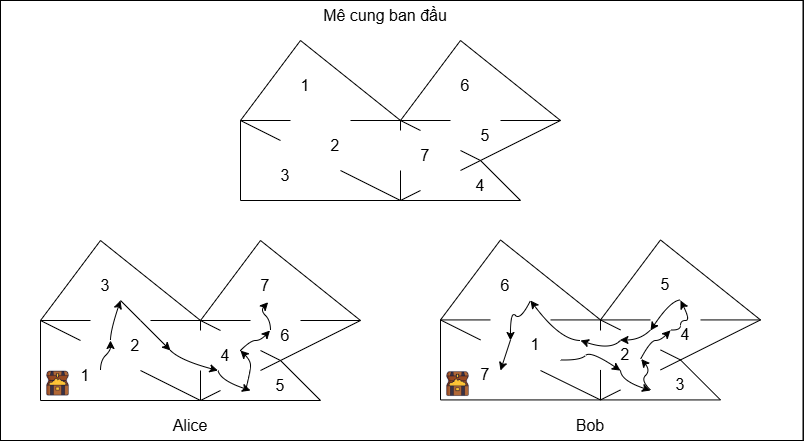

Alice và Bob tham gia một trò chơi trên mê cung. Mê cung có $$$N$$$ phòng, mỗi phòng có dạng hình tam giác, có thể di chuyển từ phòng này đến phòng khác nếu chúng có cạnh chung. Mê cung đảm bảo có thể di chuyển từ phòng này đến phòng khác bằng cách di chuyển qua một tập các phòng không lặp lại và có đúng một cách di chuyển thỏa mãn. Mỗi phòng có một bóng đèn ban đầu có trạng thái bật hoặc tắt. Trò chơi được diễn ra như sau:
Ở lượt đầu tiên, Alice bị quản trò bịt mắt và xuất hiện ở một phòng nào đó. Sau khi bỏ bịt mắt, cô sẽ chôn kho báu tại phòng đó, sau đó thực hiện liên tục các hành động. Quá trình ở lượt đầu tiên của Alice có thể được mô tả như sau:
Sau khi Alice thoát khỏi mê cung, quản trò sẽ xóa hết tất cả dấu vết di chuyển của Alice, nhưng sẽ không thay đổi trạng thái của các bóng đèn.
Ở lượt thứ hai, Bob bị quản trò bịt mắt và xuất hiện ở một phòng nào đó. Lưu ý: Phòng Bob xuất hiện ban đầu có thể khác so với phòng Alice xuất hiện ban đầu. Sau khi bỏ bịt mắt, Bob có thể thực hiện các hành động tương tự như Alice (được mô tả ở trên). Nhiệm vụ của Bob là tìm cách di chuyển sao cho ngay trước khi kết thúc lượt chơi của Bob, anh ấy xuất hiện tại phòng Alice chôn kho báu. Khi đó thì hai người chiến thắng.
Trước khi chơi, Alice và Bob không biết được bất kỳ thông tin gì về mê cung, nhưng họ được phép bàn bạc chiến thuật. Nhiệm vụ của họ là cần tìm ra chiến thuật tối ưu sao cho có thể thắng được trò chơi.
Chi tiết cài đặt
Thí sinh cần cài đặt hai hàm sau:
void solveAlice(vector<int> S)
void solveBob(vector<int> S)
$$$\dagger$$$: Mảng $$$S$$$ mô tả trạng thái của phòng bao gồm $$$4$$$ phần tử, đánh số từ $$$0$$$ đến $$$3$$$. Trong đó:
Trong hàm solveAlice() và solveBob(), thí sinh được phép gọi các hàm sau (thí sinh cần khai báo trước thư viện treasurelib.h để có thể sử dụng các hàm này):
vector<int> move(int i)
void flip()
Ngoài ra, thí sinh còn được phép cài đặt các biến, các hàm toàn cục, nhưng không được phép có hàm main(). Hàm solveAlice() được gọi trước hàm solveBob() và hai hàm này được gọi trên hai chương trình hoàn toàn độc lập.
Cách cài đặt và trình chấm ví dụ có thể xem tại contest material, lưu ý trình chấm ví dụ chỉ mô phỏng cách hoạt động và sẽ không được dùng để chấm chính thức.
Ràng buộc
Trình chấm của bài này mang tính thích ứng. Điều này tương đương với việc trạng thái của các bóng đèn sẽ không được cố định trước mà có thể thay đổi tùy vào chiến thuật chơi của Alice và Bob. Tuy nhiên, trình chấm đảm bảo trong suốt quá trình chơi, nếu Alice hoặc Bob đã bước vào một căn phòng thì trạng thái của bóng đèn tại phòng đó sẽ cố định lại và chỉ có thể thay đổi bởi hành động của người chơi.
| Subtask | Điểm | Giới hạn |
| 1 | $$$10$$$ | $$$N \le 18$$$ |
| 2 | $$$10$$$ | Các phòng có cạnh chung với tối đa $$$2$$$ phòng khác |
| 3 | $$$80$$$ | Không có ràng buộc gì thêm |
Cách tính điểm
Giả sử mỗi test có tối đa $$$1$$$ điểm. Nếu vị trí phòng cuối cùng của Bob sau khi hàm solveBob() được gọi không phải căn phòng có kho báu, bạn sẽ được $$$0$$$ điểm cho toàn bộ test đó. Ngược lại, gọi $$$Q$$$ là tổng số lần thay đổi trạng thái đèn của Alice và Bob trong suốt lượt chơi. Khi đó, điểm của bạn sẽ được tính theo công thức như sau:
Điểm của mỗi subtask là điểm thấp nhất của một test trong subtask đó nhân với số điểm tối đa của subtask.
Dưới đây là hình minh họa cho mê cung mẫu được cung cấp cho thí sinh cùng với cách di chuyển của Alice và Bob:
